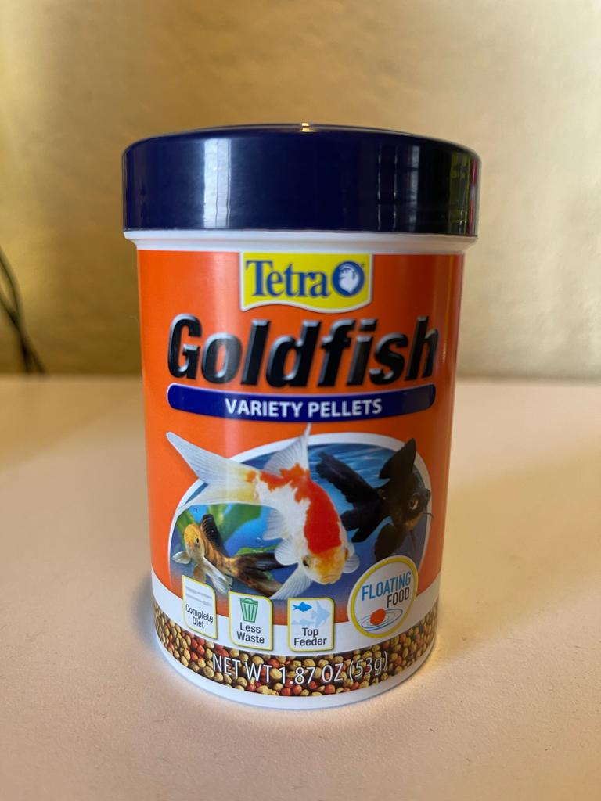
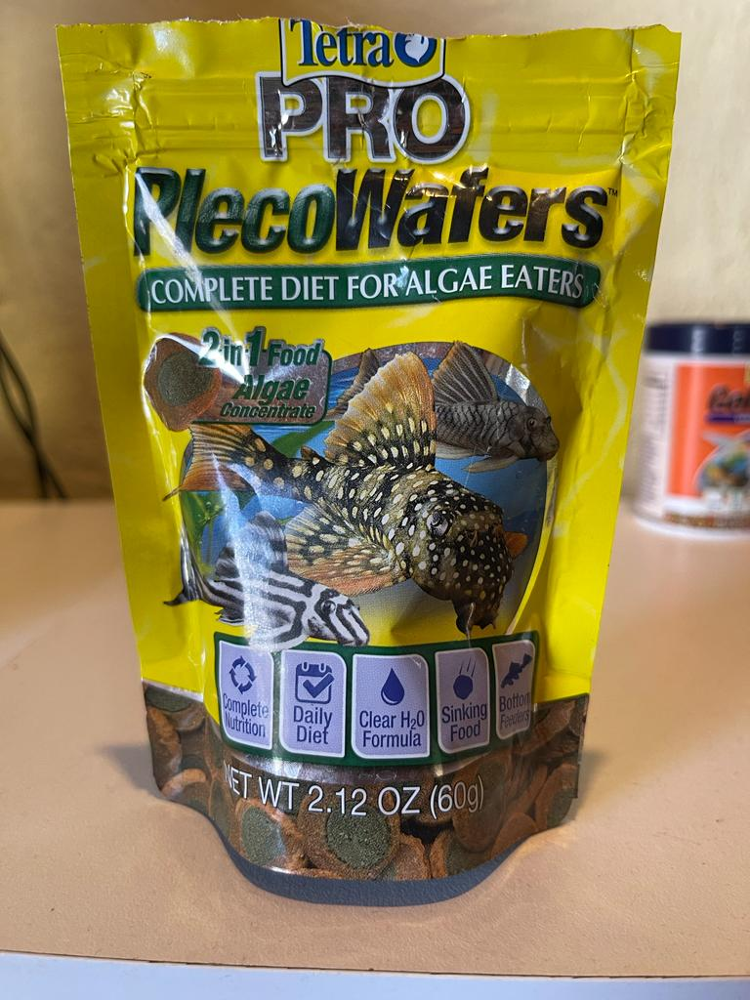
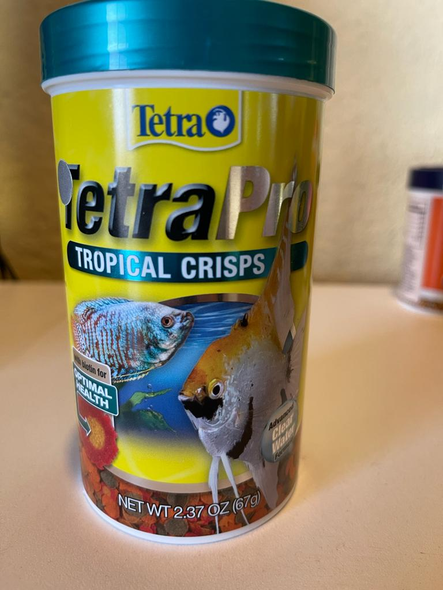

Esta comida tiene como objetivo el poder alimentar a los peces despues de que comen. Este tipo de comida se hunde al fondo del tanque y se queda en las piedras. Con ello los peces pueden ir abajo y buscar la comida cuando acaban de comer, o si a medio dia tienen hambre pueden encontrar comida en el fondo del tanque.
Esta comida se le da a pez Dojo, ya que contiene muchos nutrientes para poder alimentarlo sanamente. En realidad es una comida especial para los goldfish, pero como el dojo es un pez grande. Aprovecha de forma total los nutrientes de la comida.
Esta comida tiene una fora como una m&m, lo cual hace que se hunda en el fondo del tanque. Cuando un pleco busca comida, se encuentra esta m&m en el fondo y puede comer de forma correcta sin tener que ir por la comida de los otros peces.
Esta comida se le da los peces que son tropicales, su funcion principal es poder nutrir al pez. Darle color, y no generar tanta suciedad en el agua. Es una comida balanceada diseñada unicamente para peces pequeños tropicales.